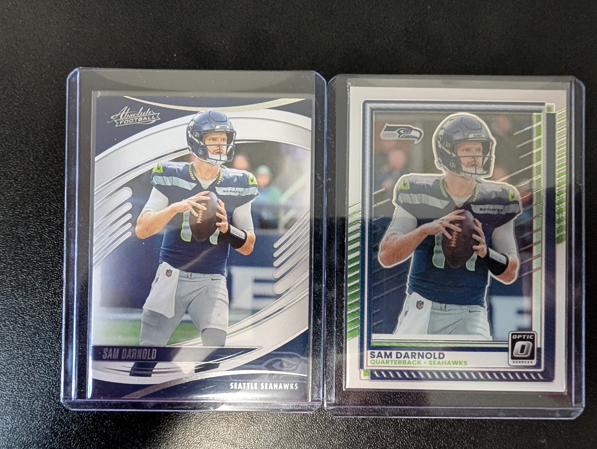

This picture browser displays photographs from my personal sports card collection. Use the buttons or the left and right arrow keys to move through the images.

All photographs were taken by Niklas Knipschild and feature cards from my personal collection.